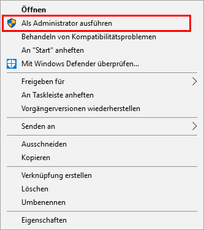
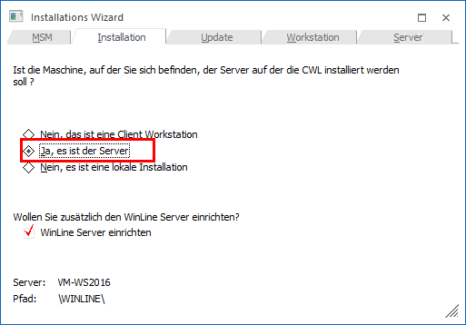
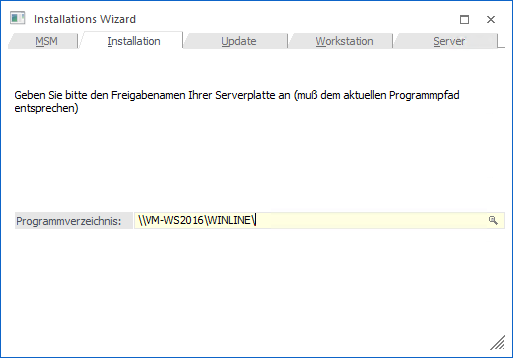
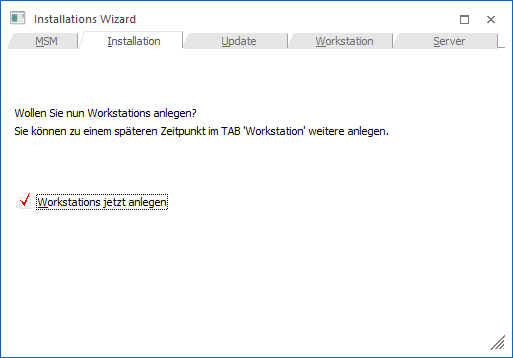
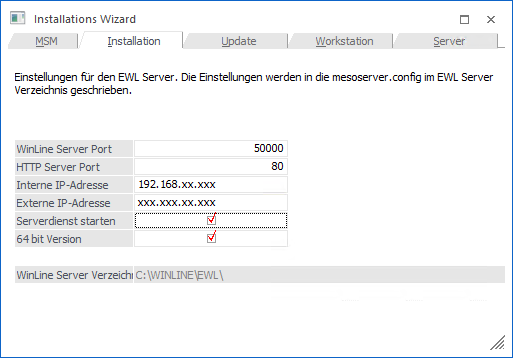
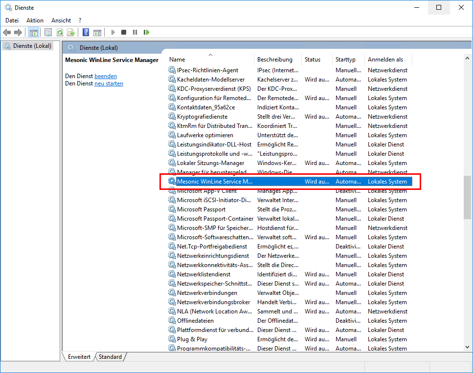
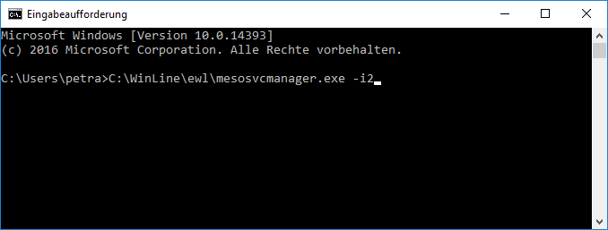
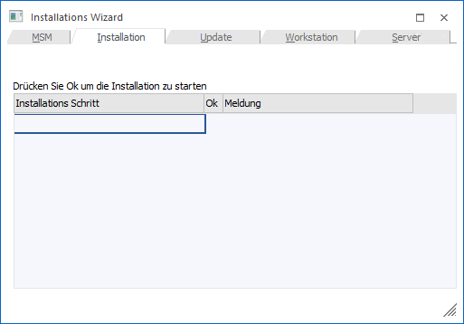
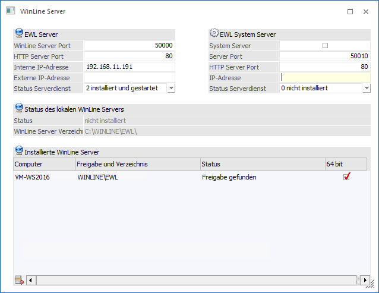
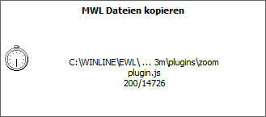

Nachdem die Installation der WinLine inkl. WinLine Server erfolgreich abgeschlossen wurde, kann der WinLine Server eingerichtet werden, welcher für die Nutzung der WinLine mobile erforderlich ist.
Achtung:
Das WinLine-Verzeichnis am Server muss für die Einrichtung als Server-Installation mit allen Zugriffsberechtigungen freigegeben werden. Weiteres ist zu beachten, dass ab Betriebssystem Windows Vista, z.B. zum Starten des WinLine Servers Dienstes im ADMIN der WinLine ADMIN "als Administrator ausgeführt" werden muss.

Wird im Zuge des Installations Wizards (MSM/Installations Wizard) die Option "Ja, es ist der Server" gewählt, besteht die Möglichkeit den WinLine Server einzurichten.

Durch Anklicken des VOR-Buttons kann die nächste Eingabe bearbeitet werden.
Im nächsten Fenster muss die Freigabe eingegeben werden, auf der die WinLine am Server installiert wurde.

Im Feld Programmverzeichnis werden der Name des Computers und die Freigabe eingegeben, auf dem das Programm installiert wurde. Hier muss darauf geachtet werden, dass die Eingaben korrekt sind. Ist dies nicht der Fall, wird eine entsprechende Fehlermeldung ausgegeben. Standardmäßig werden der aktuelle Rechnername und die Freigabe vorgeschlagen.
Durch Drücken der F9-Taste kann nach allen Freigaben am Server gesucht werden.
Wurden alle Eingaben durchgeführt, kann durch Klicken der VOR-Buttons auf die nächste Seite gewechselt werden.
Im nächsten Fenster kann festgelegt werden, ob auch weiter Workstations angelegt werden sollen. Bei der Installation vom Server muss diese Option nicht gemacht werden, da die Workstations jederzeit nachträglich angelegt werden können.

Hinweis:
Sollten in weiterer Folge mehrere WinLine Server eingesetzt werden (EWL-System Server/WinLine Server), so müssen diese Workstation als WinLine-Client (Client/Server-Client oder Zentraler Client) angelegt werden.
Durch Klicken des VOR-Buttons können Workstations angelegt werden.
Die genaue Vorgehensweise zur Installation der Workstations finden Sie im Handbuch zur Administration der WinLine im Kapitel "Installation vom Server aus".
Durch Klicken des VOR-Buttons gelangt man in das nächste Fenster, wo die Einstellungen für den WinLine Server vorgenommen werden können.

Ø WinLine Server Port
Der WinLine Server Port wird programmtechnisch vom Java-Client (Java Applet) verwendet, um auf den WinLine Server zugreifen zu können.
Ø HTTP Server Port
Dieser Port wird dazu verwendet, die EWL über den Browser (z.B.: Internet-Explorer) anzusurfen. Der WinLine Server wird über den http Server Port angesurft um eine nicht vorhandene bzw. einen neuere/aktuellere Java-Client-Version herunterladen zu können bzw. das Login zu verifizieren. Ab diesem Zeitpunkt kommuniziert der Java-Client über ein WinLine-internes Protokoll mit dem WinLine Server (über den eingegebenen WinLine Server Port)
Als HTTP Port wird der Port 80 vorgeschlagen und kann, falls auf dem Rechner nicht schon ein anderer Web-Server (wie z.B.: IIS, Microsoft Internet Information Service) läuft, weiterverwendet werden.
Vorteil von Port 80:
Beim Ansurfen des Servers braucht man nur die IP Adresse oder den Servernamen einzugeben (z.B.: http://192.168.0.1/ oder http://WinLineewl/). Es ist also nicht nötig den Port zusätzlich anzugeben (z.B.: http://192.168.0.1:81/)
Hinweis:
Es muss gewährleistet sein, dass der verwendete HTTP-Port nicht anderwärtig verwendet wird. Ist das der Fall, wird es in weiterer Folge zu Fehlermeldungen beim Ansurfen der WinLine mobile kommen. Zur Überprüfung des Ports kann z.B. der Befehl NETSTAT verwendet werden.
Ø Interne IP-Adresse / Externe IP-Adresse
Hier sind jene Adressen anzugeben, über die der Aufruf des WinLine Servers von intern bzw. von extern erfolgen soll.
Hinweis:
Die üblich intern verwendeten IP-Adressen befinden sich im Bereich 192.168.xxx.xxx (abgesehen von weiteren Bereichen die als lokale Adressen definiert sind). Diese Adresse kann also in einem internen Netzwerk (LAN) genutzt werden. Dabei ist es nicht möglich den Server extern (z.B.: von einem Internet Café aus) mit dieser Adresse ansurfen zu können. Der WinLine Server "betrachtet" IP-Adressen im Bereich 192.xxx.xxx.xxx als lokale (Intranet) Adressen.
Serverdienst starten
Durch Auswählen dieser Option wird ein Dienst (mesonic EWL Service Manager über die Datei mesosvcmanager.exe) mit dem lokalen System Account installiert. Wenn die WinLine Server Einrichtung abgeschlossen ist, wird dieser Dienst automatisch gestartet.

Der "mesonic EWL Service Manager" läuft im Hintergrund und überprüft regelmäßig, ob der WinLine Server noch läuft und startet ihn, falls das nicht der Fall ist.
Der Service kann, falls der WinLine Server z.B.: auf einen anderen Pfad gelegt werden soll, ggfs. manuell installiert bzw. deinstalliert werden:
¨ Die Installation erfolgt über den Parameter mesosvcmanager.exe -i.
¨ Die Deinstallation kann über mesosvcmanager.exe -d durchgeführt werden.
¨ Über mesosvcmanager.exe -? Werde alle verfügbaren Parameter angezeigt.
Die Eingaben müssen unter Windows in der "DOS-Box" (cmd.exe - je nach Betriebssystem unterschiedlich aufzurufen) ausgeführt werden.

Mit dem Befehl "mesosvcmanager -i2" wird beispielsweise der Serverdienst installiert und gestartet.
Hinweis:
Alle Einstellungen werden in die Datei "server.config" im WinLine Serververzeichnis geschrieben und können nachträglich über den Menüpunkt MSM/WinLine Server geändert werden.
64 BIT Version
Durch Auswählen dieser Option wird der WinLine Server mit 64 Bit installiert.
Im nächsten Schritt wird die Installation bestätigt.

Durch Drücken des "OK"-Buttons wird mit dem Einrichten des Servers begonnen.
Bei erfolgreichem Abschluss der Installation erscheint eine entsprechende Meldung. Die Admin Applikation wird damit beendet.
Über den Menüpunkt "WinLine Server" unter MSM können die zuvor eingegebenen Einträge nochmals abgeändert werden und der Status des Serverdienstes kann auf "installiert" bzw. "installiert und gestartet" gesetzt werden.

Mit dem Speichern des Fensters werden die Daten automatisch in die jeweiligen Ordner verteilt.
